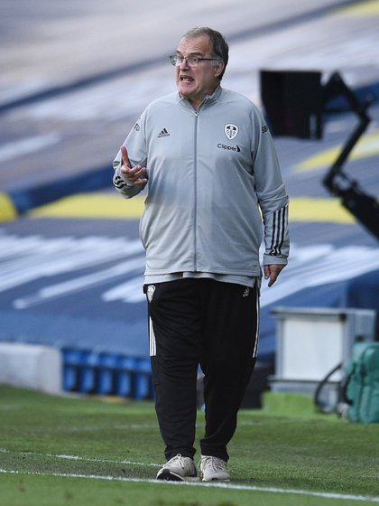
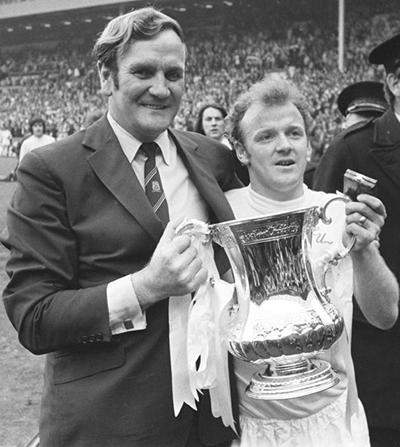
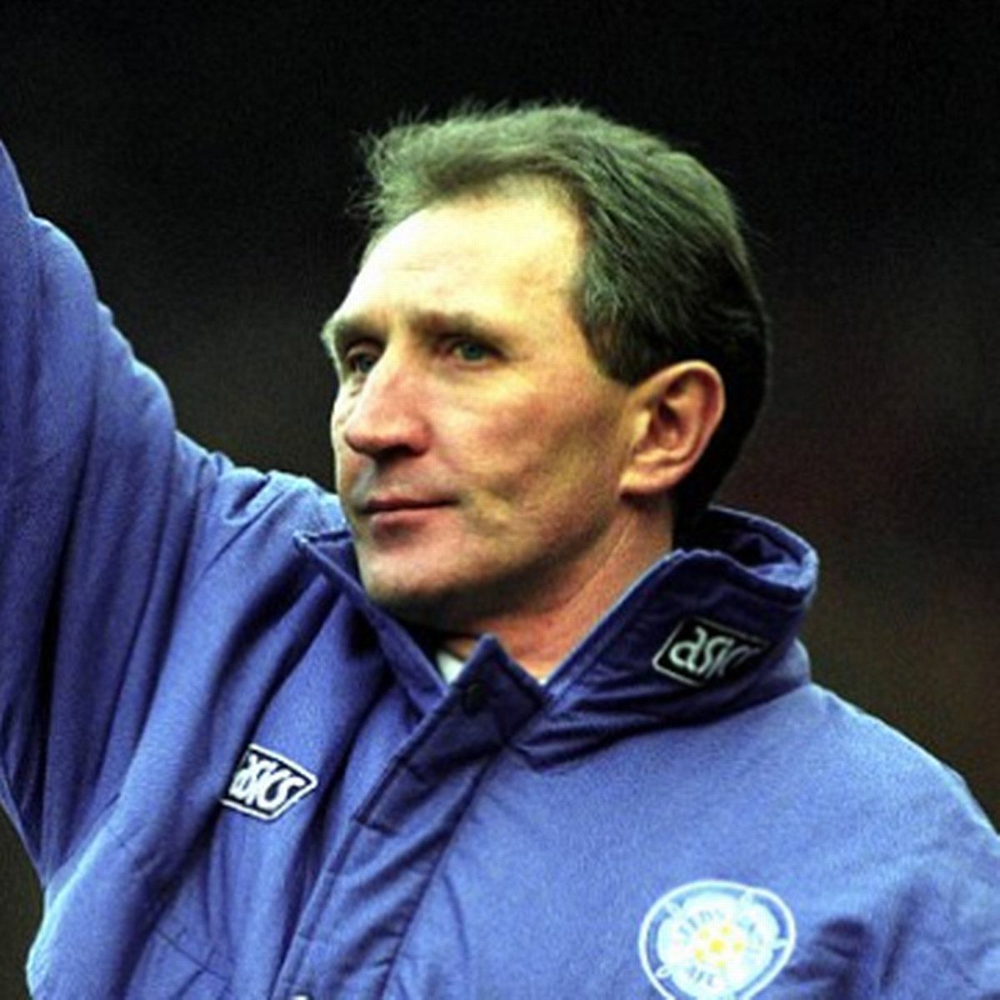

This is the webpage that contains the key managers that have managed Leeds United

Name- Marcelo Bielsa
years managed- 2018-*
win percentage- 54.1%
Description- One of the best managers in Leeds United's history ending a 17year run outside of the top flight.

Name- Don revie
Years managed- 1960-1975
Win Percentage- 54.9
Description- Don Revie and Leeds United had proved a perfect match for over a decade. The schemer took a middling team in a rugby-oriented city and transformed it into one of the country’s leading outfits, and will forever be remembered for putting Leeds on the footballing map.

Name- Howard Wilkinson
Years managed- 1988-1996
Win Percentage- 41.4
Description- After an impressive fourth place in Leeds' first season back in top company, Wilkinson's side won the championship in 1992 before also claiming the Charity Shield in a thrilling 4-3 win over holders Liverpool. Howard remains the last English manager to win the league